KELAS: XI
SEKOLAH: KOLESE KANISIUS
HOBI: MUSIK, GAMBAR, MAIN, TIDUR
CITA-CITA: AEROSPACE ENGINEER

Nama saya Jamie, saya adalah sebuah murid yang sedang sekolah di KOLESE KANISIUS, Jakarta. Saya sedang belajar di semester 2 kelas 11. Saya suka menggambar, bermain game, dan memainkan alat musik. Semester ini saya belajar tentang membuat website menggunakan HTML, CSS, dan JavaScript.
| TUGAS 1 | 95 |
|---|---|
| TUGAS 2 | 100 |
| TUGAS 3 | 100 |
| TUGAS 4 | 90 |